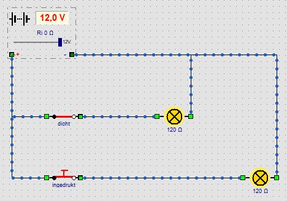

Leerpad › Vertrekken van energie › Les 3 van 5 · Niveau: Basis
In Logic is het hetzelfde onderdeel: rechtsklik op de schakelaar › Soort › Schakelaar of Drukknop. De drukknop tekent een brugje boven de contacten; drukken duwt het brugje op de contacten.

Beide kringen hangen aan dezelfde bron. Volg met je vinger de weg van de stroom: van de + klem, door de schakelaar of de drukknop, door de lamp, en bovenlangs terug naar de − klem.
Bedenk voor elk voorbeeld of je een schakelaar of een drukknop nodig hebt: de deurbel, het licht in de klas, de claxon van een auto, een ventilator, de knop van een lift. Verander daarna in het voorbeeld de drukknop in een schakelaar en kijk wat er anders is.
Drukknop: de deurbel, de claxon en de knop van de lift (je geeft maar een kort signaal, een puls). Schakelaar: het licht in de klas en de ventilator (die moeten blijven werken als je loslaat). Na rechtsklik › Soort › Schakelaar blijft de onderste lamp branden als je loslaat.